Wild Horizon
The wondrous circus festival
loose
imaginative
playful
accessible
collaborative
Wild Horizon Festival is a two-day circus and play festival at Philly’s Cherry Street Pier. Its first edition featured 20+ performances from local and internationally touring artists, centered around wonder, creative movement, and the freedom to play in public space.
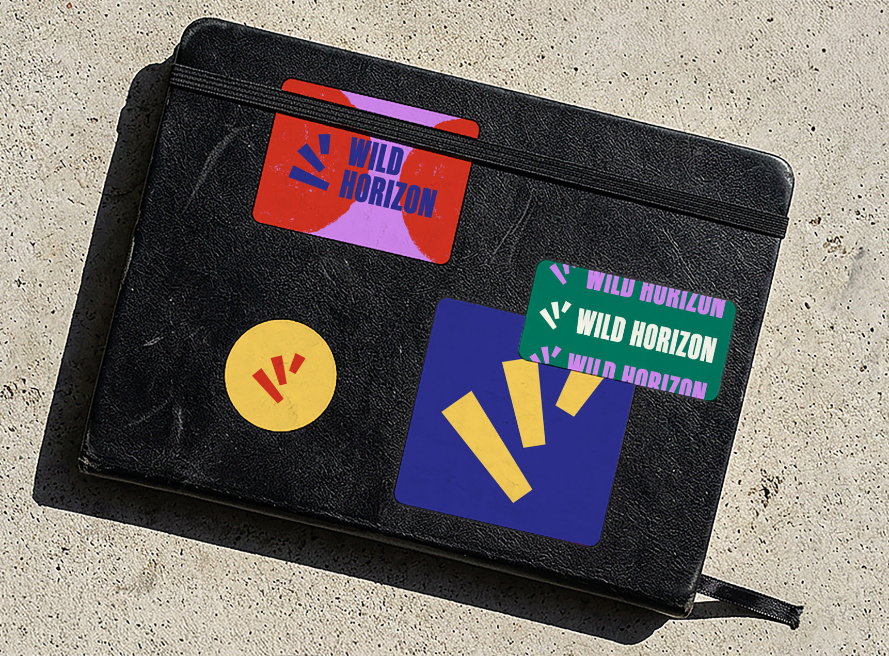
Circus is all about balance and imbalance. An acrobat climbs high up, falls to the ground, gets back up and flies through the air again. The logo and identity embody this absurdity and momentum.

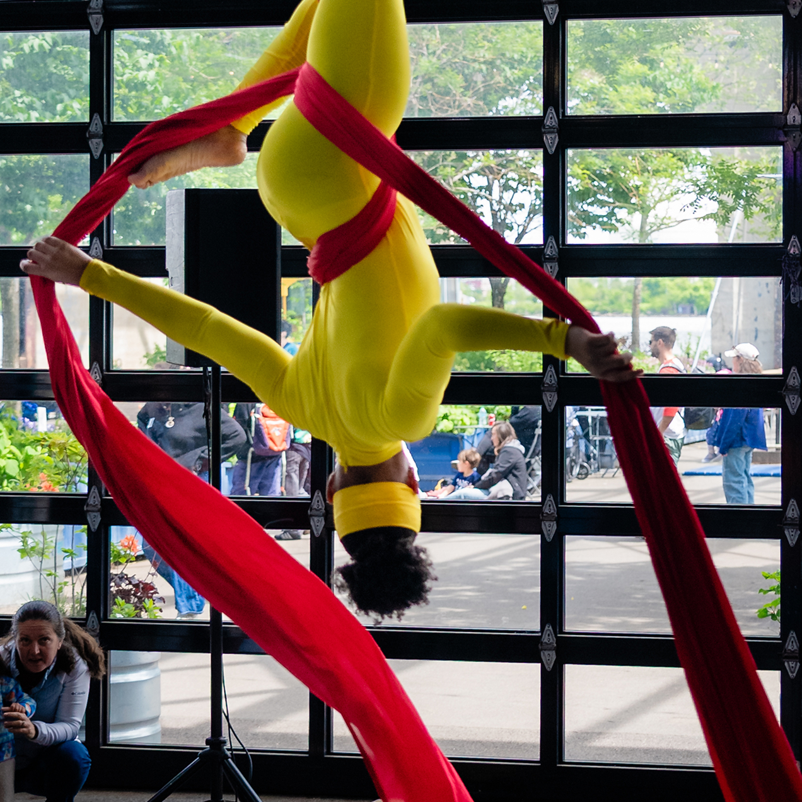
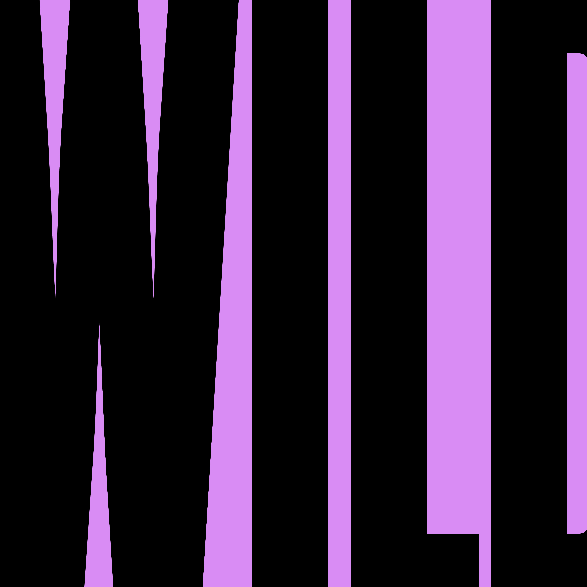
Many performances involve stacking, deconstructing, and rebuilding, so we utilized simple shapes to represent the artists using objects and environments available to them. They also bring a sense of play to the identity.

Dividing the shapes into sections plays into the metaphor of exploring what is possible on the other side of the horizon line, and it allows for modularity and accessibility for the Wild Horizon team to use.
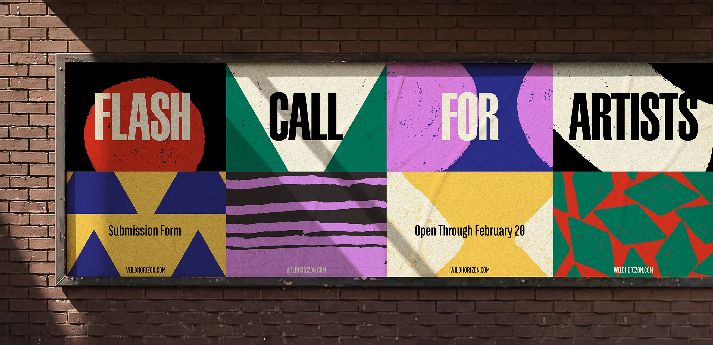
Bold typography and colors inspired by traditional circus festivals balance the risk-taking aspects of circus with maturity and elegance.
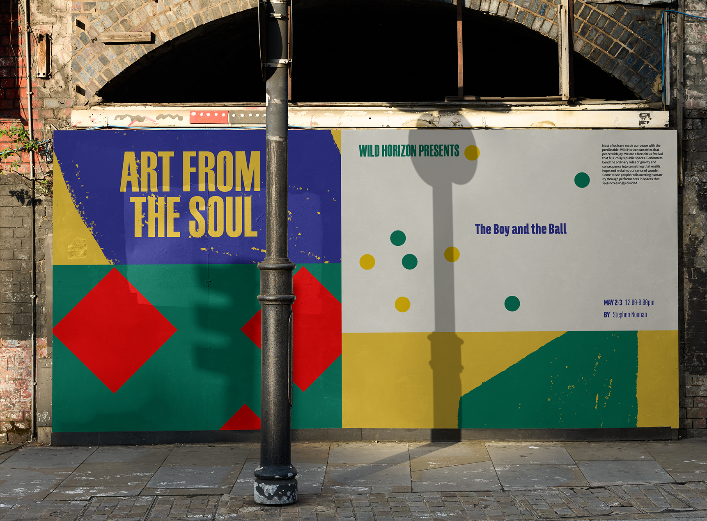
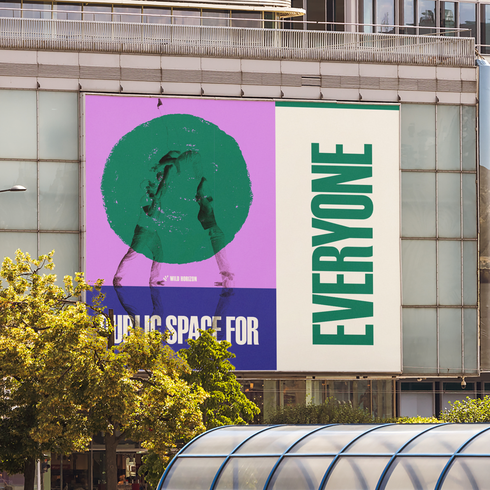
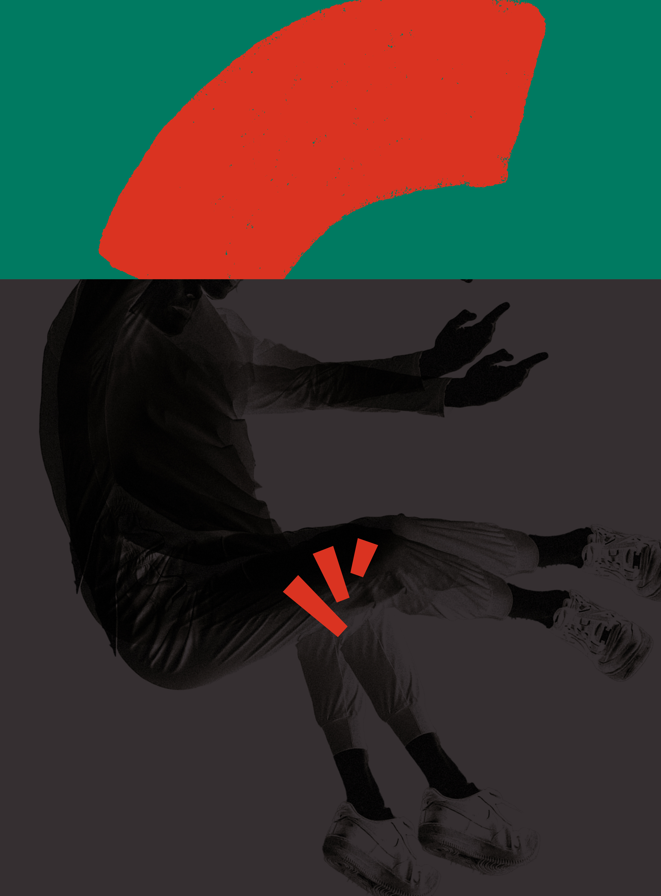
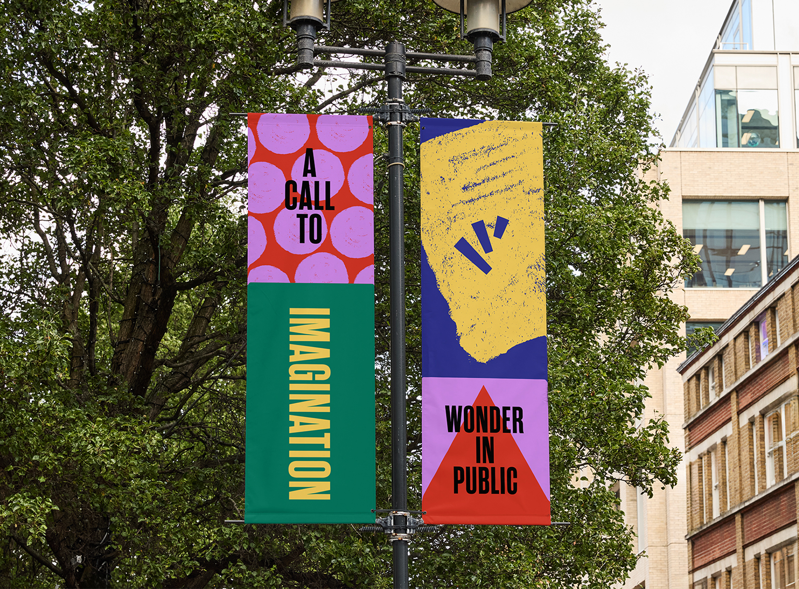
Wild Horizon reduced the boundary between a six-year-old and a world-class juggler. Being a free event open to all was important to the team, reclaiming public spaces for joy, empathy, and art.
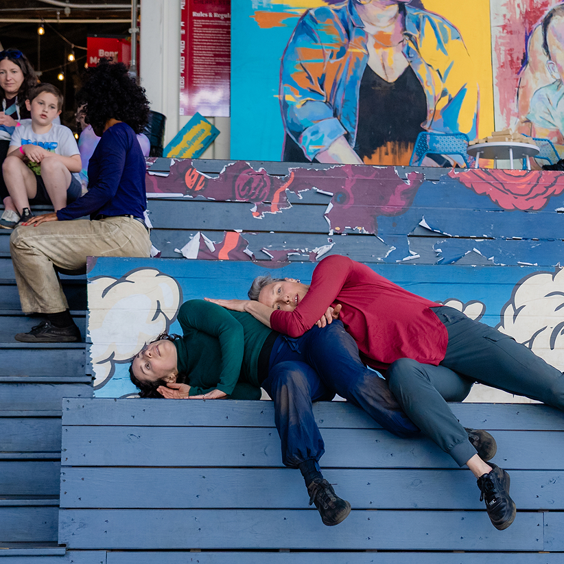
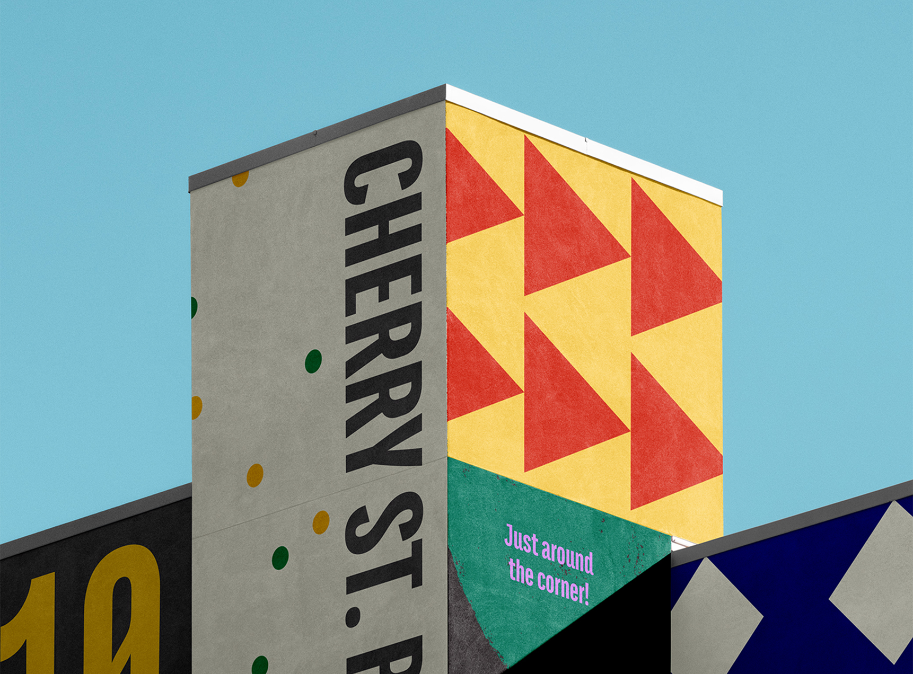
We also helped the Wild Horizon team with a website design that organizes the full program of performances by category and audience level. Easy for attendees to pick the shows they want to see and recognize the graphics live at the festival.
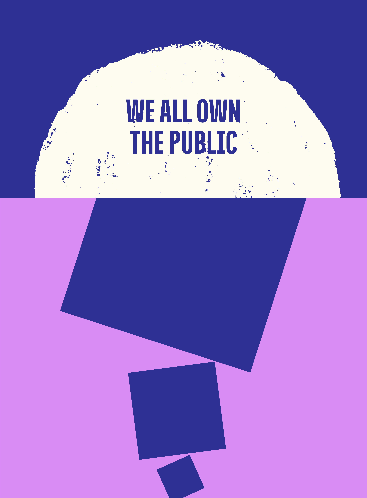
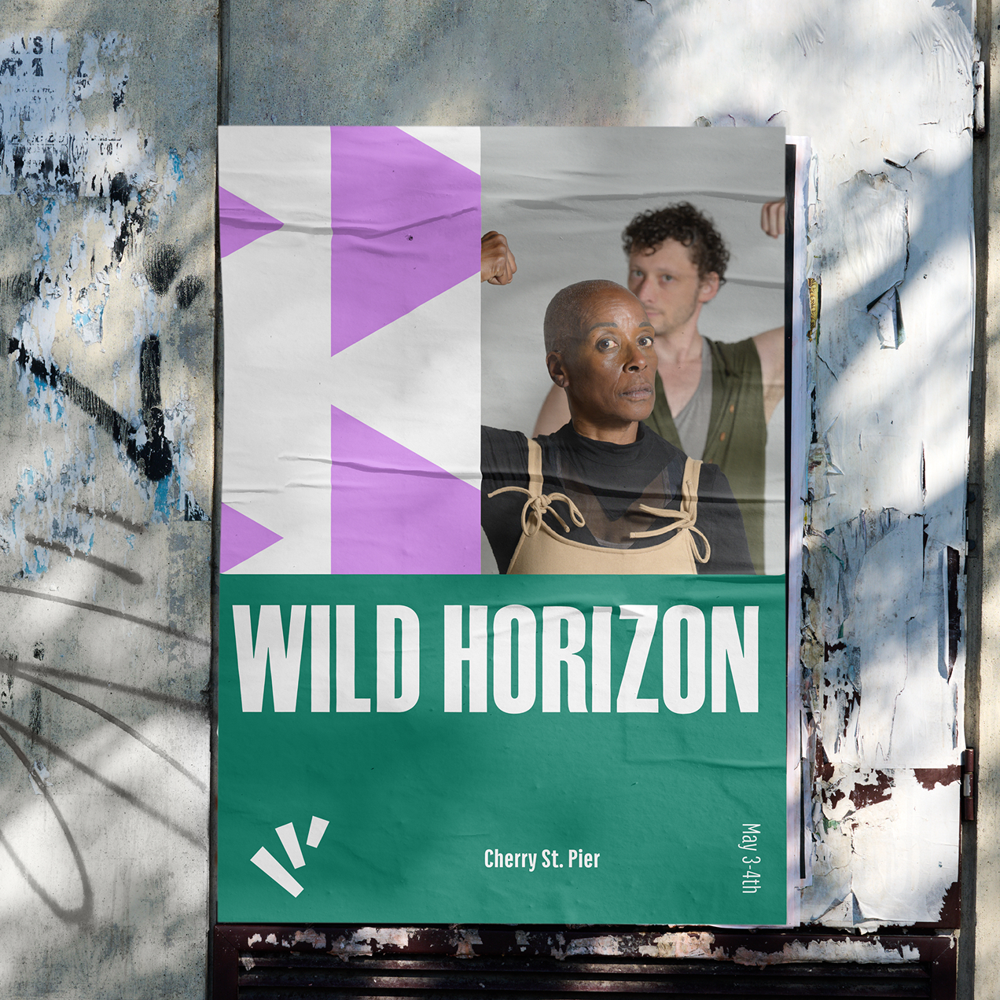
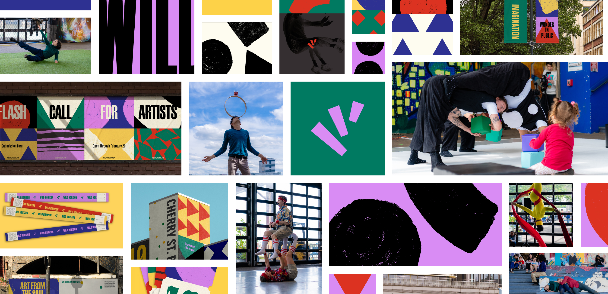